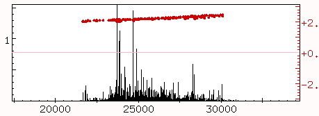
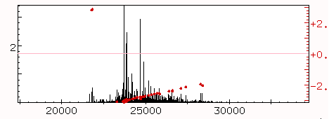
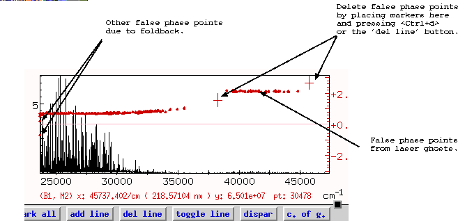

In this phase plot, all of the points line on a well-defined line, with no 2-pi phase flips or false points caused by ghosts or foldback.

In this plot, there is a 2-pi phase flip, caused by using a wrong value for the central point. A single polynomial cannot be fitted to this phase, and to correct it you should go back to the phase window and change the value used for the central point. Alternatively, you can correct a problem like this by multiplying the interferogram by -1. This is done with the command input inverted, which is bound to the 'Invert interferogram' button in the plot window.

In this plot, the general phase is well-behaved, but there are false points caused by foldback from other aliases and by laser ghosts. These must be removed by surrounding them with two markers and deleting them with <Ctrl+d> (usually bound to the button 'delete' if you are using the default mappings for the buttons).